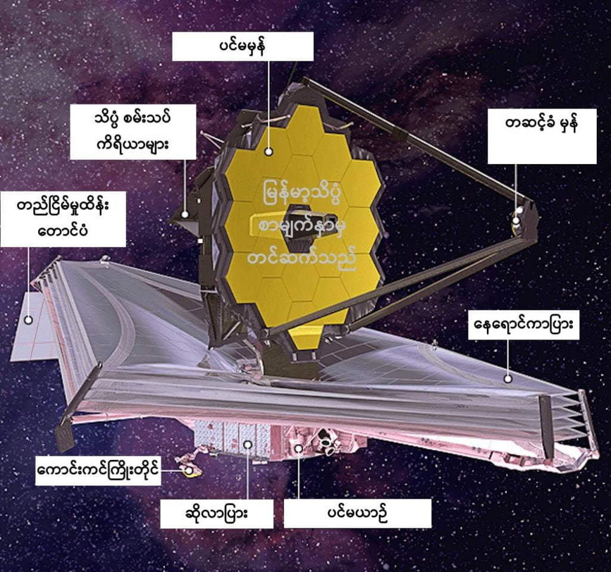

အခု ဓါတ်ပုံဟာ အသစ် လွှတ်တင်လိုက်တဲ့ ဂျိမ်းစ်ဝက်ဘ် တယ်လီစကုပ် ကြီးရဲ့ တူမတူတဲ့ စွမ်းဆောင်ရည်ကြောင့် ရရှိလာတဲ့ ဓါတ်ပုံ ဖြစ်ပါတယ်။
“ခင်ဗျားတို့ သေချာ တွေးကြည့်ရင် ဒါဟာ လူသားတွေ ကြည့်ရှုခဲ့ ဖူးသမျှ နေရာတွေ အားလုံးထက် ပိုဝေးပါတယ်” လို့ နယ်လ်ဆင် က ဘော်လ်တီးမိုး မြို့မှာရှိတဲ့ အာကာသ တယ်လီစကုပ် သိပ္ပံ ဌာန (Space Telescope Science Institute in Baltimore) မှာ ပြုလုပ်တဲ့ သတင်းစာ ရှင်းလင်းပွဲမှာ ပြောကြား ခဲ့ပါတယ်။
ဒီ ဌာန ဟာဆိုရင် ဂျိမ်းစ်ဝက်ဘ် တယ်လီစကုပ်ကြီးကို မြေပြင်က ထိန်းချုပ်တဲ့ ဗဟို ဌာနချုပ်လဲ ဖြစ်ပါတယ်။
ဒီ ဂျိမ်းစ်ဝက်ဘ် တယ်လီစကုပ် ကြီးကို ပြီးခဲ့တဲ့ ဒီဇင်ဘာ လက လွှတ်တင်ခဲ့တာ ဖြစ်ပြီး ကမ္ဘာကနေ အကွာအဝေး မိုင် ၁.၅ သန်း အကွာကနေ အတူတကွ လိုက်ပါပျံသန်းပြီး နေကို ပတ်နေတာ ဖြစ်ပါတယ်။
ဂျိမ်းစ်ဝက်ဘ် တယ်လီစကုတ်ရဲ့ တန်ဖိုးဟာ အမေရိကန် ဒေါ်လာ ၁၀ ဘီလီယံ (၁ ဘီလီယံ = သန်း ၁၀၀၀) ပမာဏ ရှိပါတယ်။
ဒီ ဂျိမ်းစ်ဝက်ဘ် တယ်လီစကုပ် ကြီးဟာ သူ့အရင် တည်ဆောက်ခဲ့ ဖူးသမျှ တယ်လီစကုပ်တွေ အားလုံးထက် ပိုပြီး ဝေးဝေးကို မြင်နိုင်စွမ်း ရှိပါတယ်။
သူ့မှာ အလွန် ကြီးမားတဲ့ အလင်းပြန် ကြေးမုံ မှန်ဘီလူးကြီး တပ်ဆင်ထားပါတယ်။ နောက်ပြီး အနီအောက် ရောင်ခြည်ကို ဖမ်းယူနိုင်တဲ့ ကိရိယာ တွေလဲ တပ်ဆင် ထားတာမို့ အာကာသ ထဲက ဖုန်မှုန့် နဲ့ ဓါတ်ငွေ့တိမ်တိုက်တွေကို ဖြတ်သန်းပြီး ကြည့်မြင်နိုင်မှာ ဖြစ်ပါတယ်။

အခုထက် ထိတော့ စကြာဝဠာရဲ့ အစောဆုံး အခြေအနေကို လေ့လာမှုမှာ Big Bang မဟာ ပေါက်ကွဲမှုကြီး အပြီး နှစ်သန်း ၃၃၀ အကြာက အခြေအနေကိုဟာ အစောဆုံး လေ့လာနိုင်တဲ့ ကာလ ဖြစ်ပါတယ်။
နက္ခတ် ပညာရှင် များကတော့ မကြာမီ အချိန်မှာ ဂျိမ်းစ်ဝက်ဘ် က ဒီ စံချိန်ကို အလွယ်တကူ ချိုးနိုင်လိမ့်မယ်လို့ ယုံကြည်နေ ကြပါတယ်။
နောက်ထပ် သတင်းကောင်း တစ်ပုဒ်ကတော့ ဂျိမ်းဝက်ဘ် တယ်လီစကုပ် ကြီးဟာ မူလ ခန့်မှန်းထားတဲ့ သက်တမ်း ၁၀ နှစ်ထက် နှစ်ဆတိုးပြီး အနှစ် ၂၀ ခန့်ထိ တာဝန်တွေကို ထမ်းဆောင် နိုင်လိမ့်မယ်လို့ ဆိုပါတယ်။ နာဆာရဲ့ ဒုတိယ ညွှန်ကြားရေးမှူး ပင်မယ်လ်ရွိုင် (Pam Melory) က သတင်းထောက် များကို ပြောကြား လိုက်တာ ဖြစ်ပါတယ်။
“ဒီ နှစ် ၂၀ အတွင်းမှာ ကျွန်မတို့ဟာ ပိုဝေးကွာတဲ့ စကြာဝဠာ အစဦးရဲ့ သမိုင်းထဲကို ခရီးသွားနိုင် ကြရုံတင် မဟုတ်ပါဘူး။ သိပ္ပံ ပညာရပ် တွေကိုလဲ ပိုပြီး နက်နက်ရှိုင်းရှိုင်း လေလာ့နိုင် ကြမှာ ဖြစ်ပါတယ်။ ဘာ့ကြောင့်လဲ ဆိုတော့ ကျွန်မတို့မှာ သင်ယူဖို့၊ ဖွံ့ဖြိုးဖို့ နဲ့ အသစ် တွေ့ရှိချက်တွေ ရှာဖွေဖို့ အခွင့်အရေးတွေ ရကြမှာ ဖြစ်လို့ပဲ ဖြစ်ပါတယ်” လို့ သူမက ဆက်ရှင်းပြပါတယ်။
နာဆာ အဖွဲ့ကြီးက လာမယ့် ၁၂ ရက်နေ့မှာ ထုတ်ပြန်မယ့် ဓါတ်ပုံတွေ အထဲမှာ ဝေးကွာတဲ့ အရပ်က ပြင်ပဂြိုဟ် (exoplanet) တစ်လုံးရဲ့ အလင်းပြန် မှုကို မှတ်တမ်းတင် ရိုက်ကူးထားတဲ့ Spectrograph တစ်ခုလဲ ပါဝင်မယ်လို့ သိရပါတယ်။
အလင်းရောင်စဉ် မှတ်တမ်း (Spectroscopy) ဆိုတာက ကြယ်တွေဆီက လာတဲ့ အလင်းကို ဖွဲ့စည်းထားတဲ့ အခြေခံ ရောင်စဉ်တွေ အဖြစ် ပြန်လည် ခွဲခြားပြီး လေ့လာတဲ့ နည်းပညာ တစ်ခု ဖြစ်ပါတယ်။
ဒီ နည်းပညာကို အသုံးပြုပြီး ဝေးကွာတဲ့ အရပ်တွေက ဂြိုဟ်တွေရဲ့ လေထုထဲမှာ ပေါင်းစပ် ပါဝင် ဖွဲ့စည်း နေတဲ့ ဓါတ်ငွေ့တွေနဲ့ ပါဝင်တဲ့ အချိုးကို တွက်ယူလို့ ရပါတယ်။
ဒါ့အပြင် ဒီ နည်းပညာ ကိုပဲ သုံးပြီး ဂြိုဟ်တွေမှာ ရေရှိမရှိ နဲ့ ဒီရေဟာ မြေအောက်ရေ လား၊ မြေပြင် ပေါ်မှာ ရှိနေလား ဆိုတာကိုလဲဆုံးဖြတ်နိင်မယ်လို့ သိရပါတယ်။
“အရင်တုန်းက အသုံးပြု ခဲ့တဲ့ တိုင်းတာရေး ကိရိယာ တွေဟာ ဂျိမ်းစ်ဝက်ရဲ့ တိုင်းတာရေး ကိရိယာ တွေနဲ့ နှိင်းယှဉ်ရင် အရမ်းကို အကန့်အသတ် များလွန်းပါတယ်” လို့ နက္ခတ်ပညာရှင် တစ်ဦးဖြစ်သူ နက်စ်တာ အက်စ်ပီနိုဇာ (Nestor Espinoza) ကလဲ ပြောပါတယ်။
“ဘာနဲ့ တူလဲဆိုတော့ မှောင်နေတဲ့ အခန်းလေး ထဲကို အပ်ပေါက်လေးက ချောင်းကြည့် သလိုမျိုး ဖြစ်နေတာ ပေါ့ဗျာ” လို့ သူက ဆက်ရှင်းပြပါတယ်။ အခုတော့ ရုတ်တရက် ပြတင်းပေါက် ဖွင့်လိုက်လို့ အခန်း ထဲမှာ လင်းလင်း ချင်းချင်း ဖြစ်သွားသလို ပေါ့ဗျာလို့” သူက ဆက်ပြီး ရှင်းပြပါတယ်။
Ref: Webb telescope: NASA to reveal deepest image ever taken of universe | phys.Org